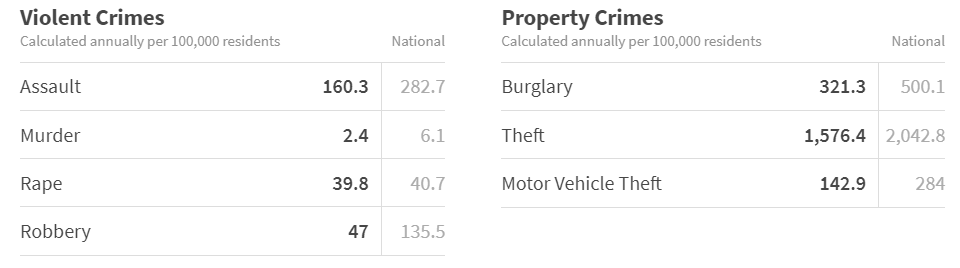

Population / Population Growth
The population of Peoria continues to grow at an increasing rate
-
Based on the population consensus from 2016, there are 160,000 residents within the city.
-
The population density of Peoria is 980.42 people/mi2
-
The median age is an overall 39.5 years
Demographics
Peoria has varying populations of different groups and ethnicites
-
The racial makeup of the city was 84.95% White,
2.78% Black or African American,
0.68% Native American,
1.92% Asian, 0.11% Pacific Islander,
7.09% from other races,
and 2.48% from two or more races.
15.41% of the population were Hispanic or Latino of any race.
-
the population was spread out with 28.4% under the age of 18,
6.7% from 18 to 24,
30.6% from 25 to 44,
19.8% from 45 to 64,
and 14.4% who were 65 years of age or older.
-
The median age was 36 years. For every 100 females, there were 92.5 males.
For every 100 females age 18 and over, there were 88.0 males.
General Statistics
The size of Peoria and more
-
The total area of Peoria is 179.11 mi2
-
In 2017 there were 64,862 households in the city, with an average size of 2.79 people per household.
-
Peoria is the 9th largest city in Arizona
Household Details
House costs and sizes
-
The median house has 5.8 rooms, and has a value of $230,400.
-
In 2017 there were 64,862 households in the city, with an average size of 2.79 people per household.
-
Median household income is $69,589
-
Median gross rent in 2016: $1,178.
Crime Rates
The crime rates in Peoria are less than that of the national average in all aspects, some by large margins.

Accessibility
Peoria is a well-develope city. In most areas there is easy access to schools, restaurants and other places that fit you needs.
-
There are 58 public schools in Peoria, and 4 private schools. Some of the best public schools include BASIS Peoria, Glendale Hearts Academies, and Moutain Ridge High School.
-
Three of the main and best school districts in Peoria include Peoria Unified School District, Deer Valley Unified School District, and Glendale Union High School District
-
Fairly easy to find nearby McDonald's, Wendy's, In-N-Out, Chick-Fil-A, KFC, Tacobell, Carl's Jr. or other fast food restaurants in the city area
-
There are three walmart supercenters
Job Opportunities
There are a plethora of job opportunities in Peoria due to its extensive development.
-
There are 35,281 full-time jobs available
-
There are 7,864 full-time jobs available